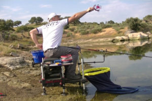

La pesca a la inglesa (también conocida como pesca a la boloñesa en otros países) comúnmente denominada así, no es más que un estilo de pesca al coup con carrete. Se trata de una modalidad donde se consiguen peces blancos de tamaño considerable. Particularmente, es un tipo de pesca deportiva, realizada con mucho estilo. Con esta se pueden conseguir especies como los carpones o las bremas con una facilidad considerable si hacemos una comparación con otras artes. Es una modalidad que ejercen principalmente las personas que se dedican al carpfishing o pesca de carpas. La pesca a la inglesa puede realizarse en todo tiempo de aguas, tanto en mar como en ríos, lagos, embalses… Aun así, llevar a cabo este tipo de pesca en el mar nos genera algunos inconvenientes, ya que la corriente y las zonas próximas de roca pueden estropear jornadas enteras. Si nuestro vafer se hunde, podemos dar por finalizada la actividad, de ahí, que sea mucho más propicia en escenarios de puerto o con aguas en calma, aunque, como decimos, la modalidad se puede practicar a conveniencia.
Tenemos dos maneras de pescar a la inglesa: Por un lado está el montaje con flotador fijo, donde se puede hacer la conexión con el este sobre su propia anilla o bien con un emerillón. Este tipo se practica en zonas poco profundas, de entre aproximadamente dos y tres metros. Por el otro, está el montaje con flotador corrido, para el cual se coloca un nudo que crea una especie de tope que se podrá mover sobre la línea para ajustar la profundidad que nos interese en cada momento. Este tipo de montaje se utiliza en zonas de mayor profundidad. Con él, se evita, además, que el lance tenga un exceso de línea que queda colgando y sin utilizar, llegando a ser incluso inconveniente.
La técnica a seguir para lanzar con cualquiera de los montajes pasa por: El lance debe ser por encima de la cabeza, en dirección hacia nuestras 12, creando un ángulo de inclinación, de entre 75 y 85 grados.
Debe realizarse con mucha energía y acompañando todo el movimiento en completo.
Mientras que la línea esté en el aire, se le van ejerciendo toques a la bobina que tiene el carrete, de manera que la línea se vaya estirando y así quede completamente tersa en el agua.
Si seguimos estos pasos correctamente, la picada estará asegurada y se dará en un tiempo relativamente corto. Como ves, se trata de una técnica sencilla; ¡a practicar!